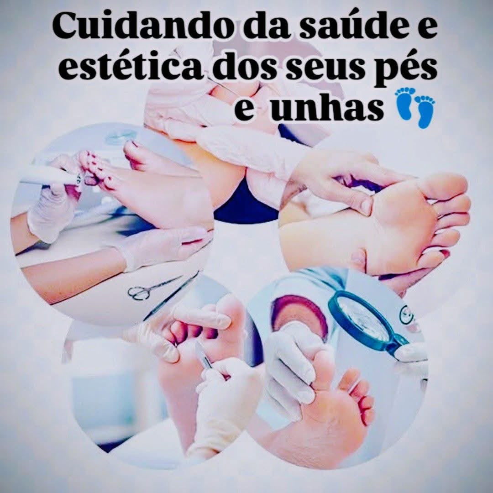
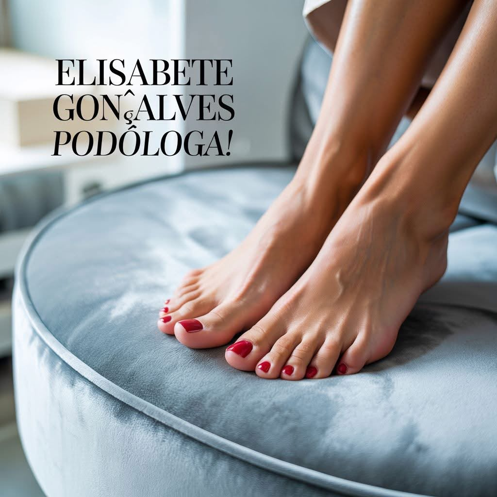
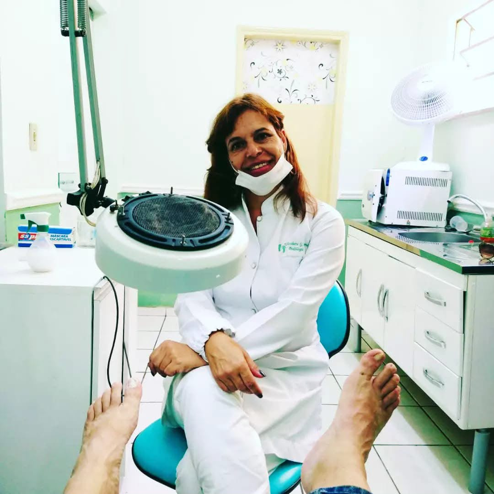
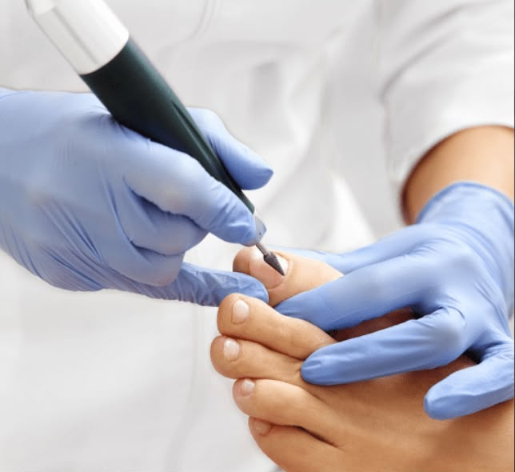
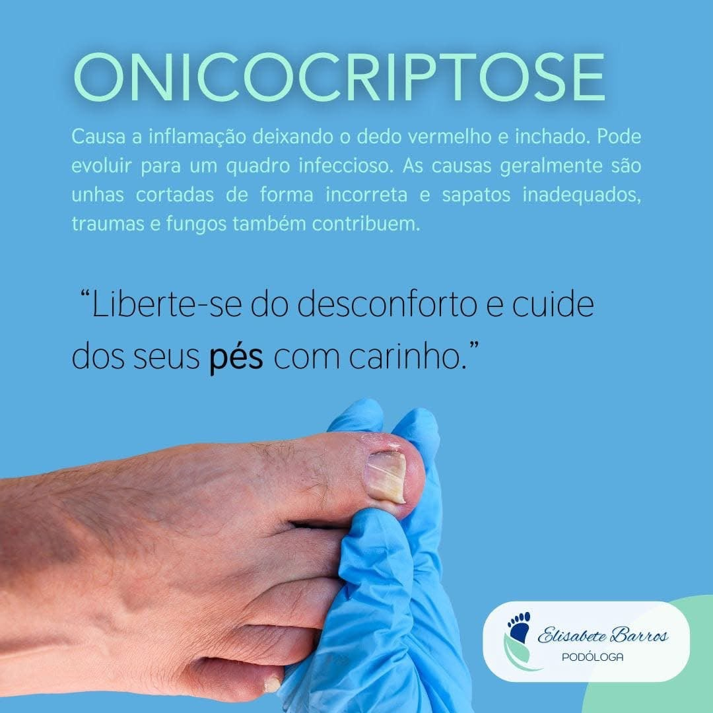
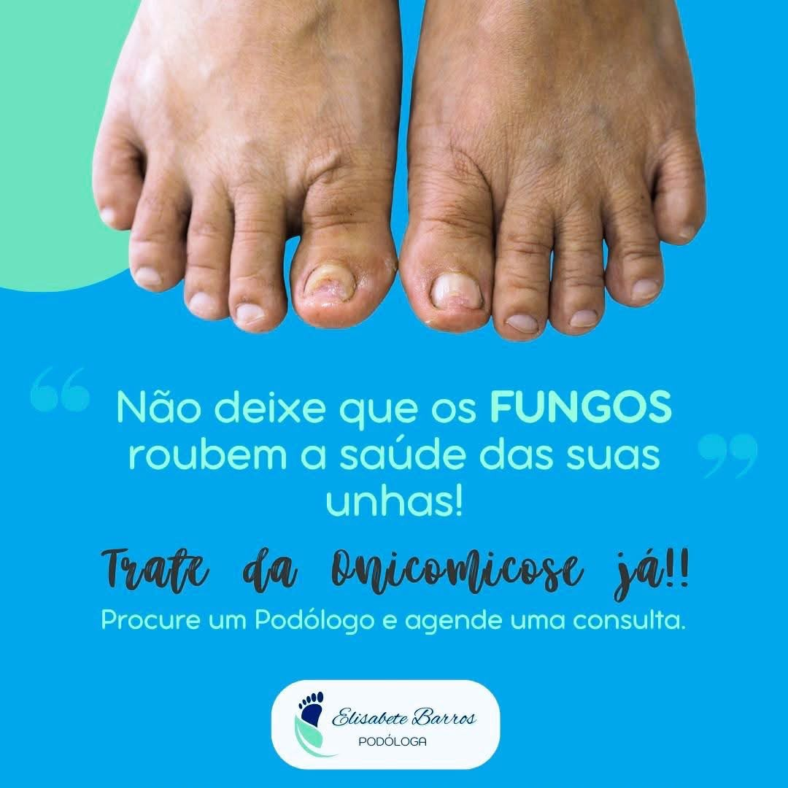
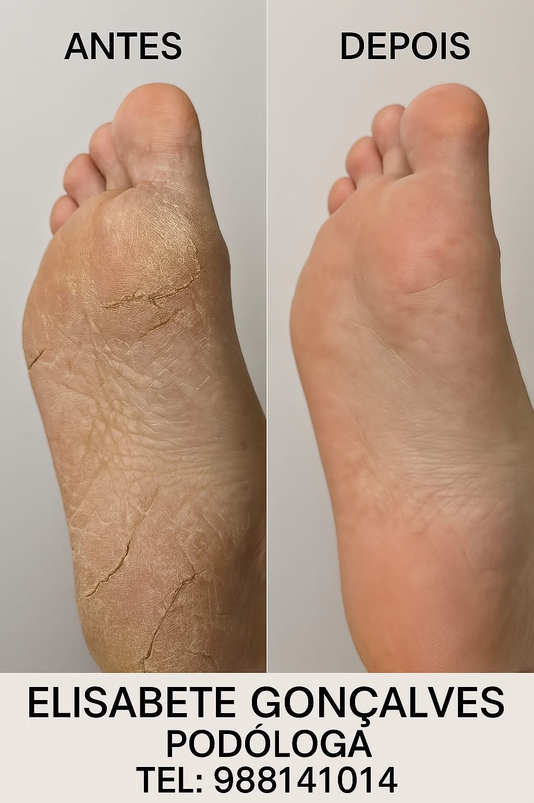
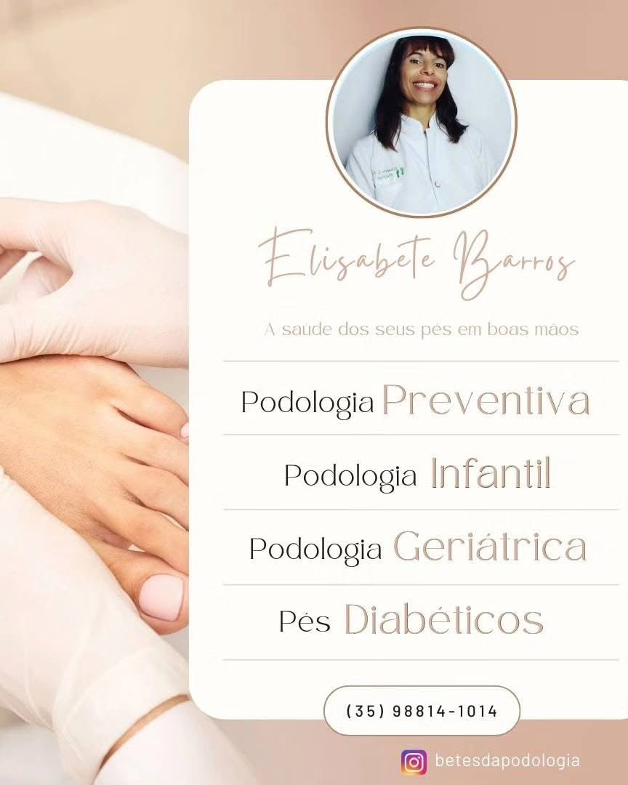
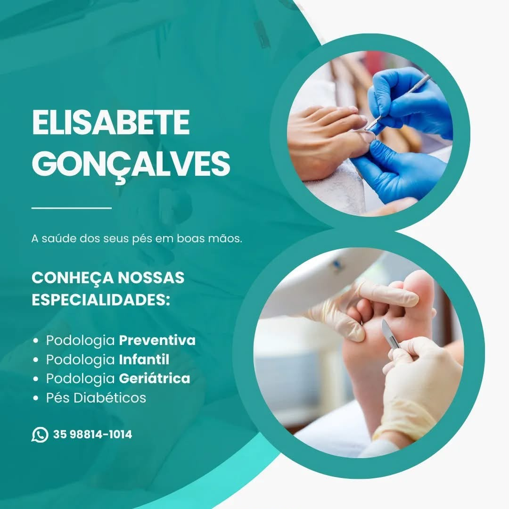
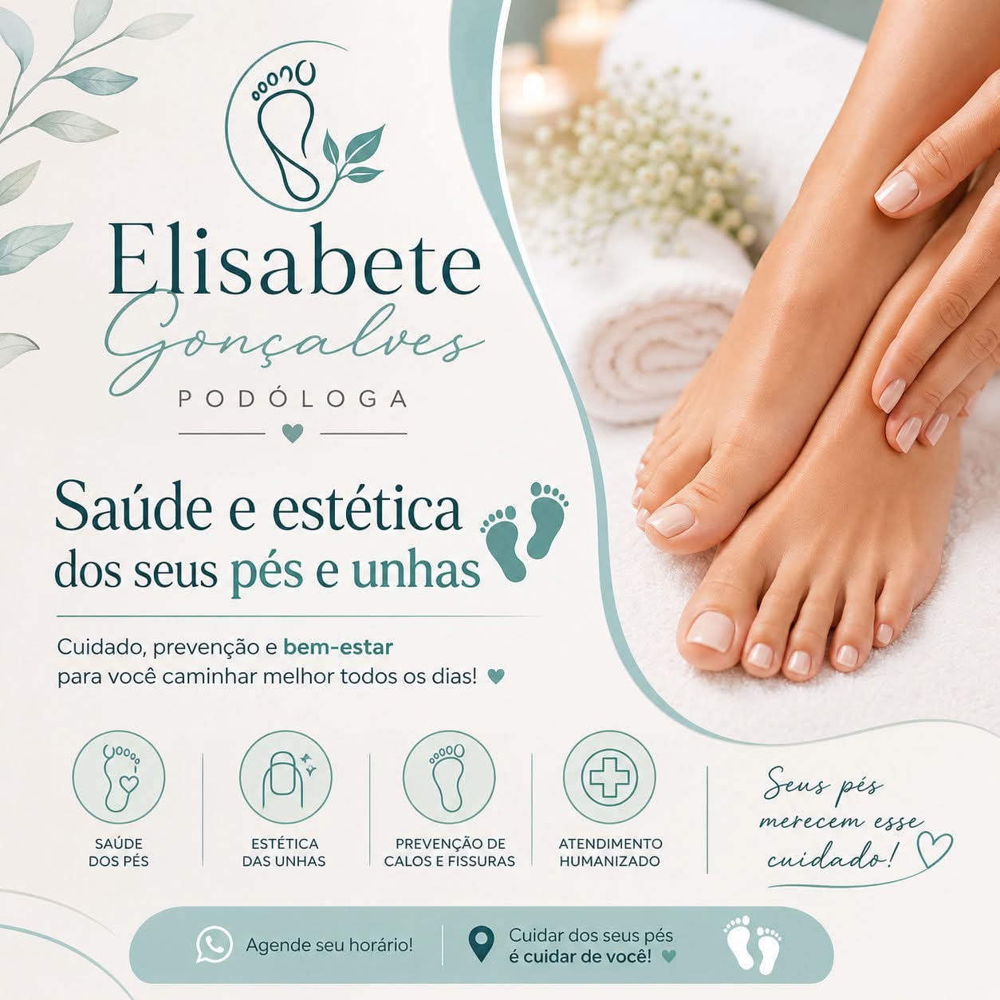

Podologia preventiva
Acompanhamento periódico para cuidar da pele e das unhas e prevenir desconfortos.
Agendar pelo WhatsApp →
Atendimento podológico em domicílio em Poços de Caldas – MG, com cuidado, segurança e atenção personalizada.


Elisabete Gonçalves oferece cuidado profissional para a saúde dos pés, respeitando as necessidades e a rotina de cada pessoa. O atendimento acontece somente em domicílio, com praticidade e atenção individual.
Atendimentos voltados à prevenção, ao conforto e ao cuidado das principais alterações nos pés e nas unhas.

Acompanhamento periódico para cuidar da pele e das unhas e prevenir desconfortos.
Agendar pelo WhatsApp →
Cuidado profissional para aliviar desconfortos e orientar o crescimento adequado da unha.
Agendar pelo WhatsApp →
Avaliação e orientação para cuidados adequados com alterações na pele e nas unhas.
Agendar pelo WhatsApp →
Cuidados para reduzir áreas de pressão, ressecamento e espessamento da pele.
Agendar pelo WhatsApp →
Atendimento delicado, acessível e adaptado às necessidades das pessoas idosas.
Agendar pelo WhatsApp →
Cuidado preventivo e acolhedor para acompanhar a saúde dos pés desde a infância.
Agendar pelo WhatsApp →
A observação frequente da pele, das unhas e de pontos de pressão é fundamental. O atendimento podológico auxilia na prevenção e na identificação de alterações que merecem acompanhamento.
O atendimento podológico não substitui o acompanhamento médico.
Agendar atendimento especializadoElisabete vai até você com os materiais necessários para oferecer um atendimento cuidadoso e personalizado. Não há atendimento em espaço físico: o serviço é realizado exclusivamente em domicílio, mediante agendamento.
Agendar atendimento domiciliarPraticidade, acolhimento e cuidado profissional.
Conheça mais sobre o trabalho e os cuidados com a saúde dos pés.
Agende seu atendimento domiciliar em Poços de Caldas – MG. Pelo WhatsApp, você conta o que precisa e combina o melhor dia e período.
Telefone: (35) 98814-1014
Atendimento: exclusivamente em domicílio